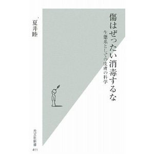

書評コーナー
季刊誌38号より
傷はぜったい消毒するな ー生態系としての皮膚の科学
夏居 睦著／光文社新書
■新書版 301頁 価格840円（税別）
著者は10年ほど前から、インターネットサイト「新しい創傷治療」を開設し、「消毒とガーゼによる治療」 撲滅を掲げている。傷が治るメカニズムが解明されているのに、それは研究者だけの知識に留まり、医療現場では、 傷は消毒しガーゼで覆う。この方法は、科学的根拠のない単なる風習にすぎないという。
どの項目も面白く、どこをどう紹介するか迷うが、傷の治療ということで皮膚との関連を述べた項目が多い。 曰く、「化粧品は、皮膚常在菌が生息する生態系（皮膚）を破壊する成分を含んでいるので、化粧は皮膚を老化させる」。 もともと薄化粧であったが、2年前に化粧品でジュクジュクになった女性を身近で知って以来、素っぴんになった私は、 うんうん、と頷く。
傷の治療法を科学的に考察していくと、「皮膚と傷と細菌の絶妙な関係」に気づく。人間は常在菌なしに 生きてはいけないし、常在菌は人間の皮膚の上でなければ生きていけない。「キレイ、キレイと手を消毒」する テレビCMに惑わされることなく、常在菌を可愛がってあげよう！（さ）